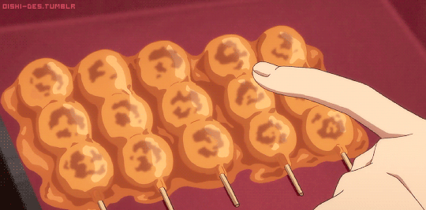

Odins Mitarashi Dango Snack

Description
Mitarashi dango are rice dumplings skewered
onto sticks in groups of 3–5
and covered with a sweet soy sauce glaze.
It is characterized by its glassy glaze and burnt fragrance.
Ingredients
- Johshinko
- Shiratamako
- Sugar
- Soysauce
- Mirin
- Potato Starch
Steps
- Make the sauce
- Make the dango
- Form the dango
- Boil the dango
Back